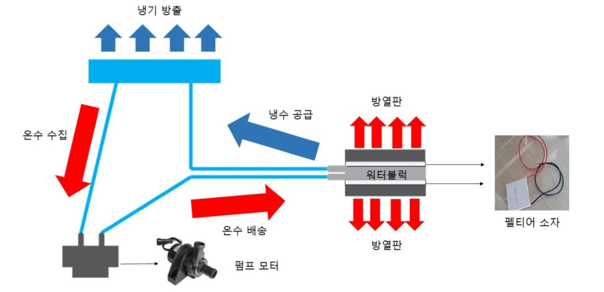

스마트 펠티어 벌통
 스마트 펠티어 벌통은 펠티어 소자를 활용하여 냉수를 공급,
공급된 냉수를 이동하여 벌통 내부로부터 냉기를 제공하여 벌집의 내부 온도를 낮춥니다.
냉기를 방출한 물은 펌프를 이용하여 수집한 후에 다시 워터블록으로 이동하여 펠티어 소자를 거친 후에 냉수로 변화하여 이동합니다.
스마트 펠티어 벌통은 펠티어 소자를 활용하여 냉수를 공급,
공급된 냉수를 이동하여 벌통 내부로부터 냉기를 제공하여 벌집의 내부 온도를 낮춥니다.
냉기를 방출한 물은 펌프를 이용하여 수집한 후에 다시 워터블록으로 이동하여 펠티어 소자를 거친 후에 냉수로 변화하여 이동합니다.
실제 [서양종 꿀벌(Apis mellifera L.)의 노제마 감염률과 수명에 미치는 온도, 황사, 산성비의 영향] 보고에 에 따르면
30~35도의 기온이 유지된 벌통에서 벌이 가장 오래 살아남으며 감염률 역시 낮은 수치를 보입니다.
실제 적정 온도인 30~35도 보다 낮거나 높으면 벌들이 급격하게 폐사합니다.
해외에서 역시 새로운 벌집을 만들어 내기 위해 많은 후원을 받고 있으며 도시 양봉을 편리하게 할 방안을 찾아가고 있습니다.